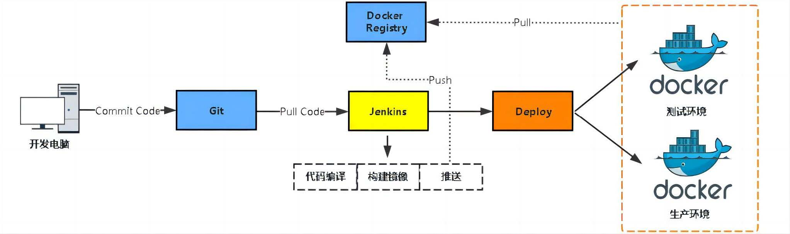
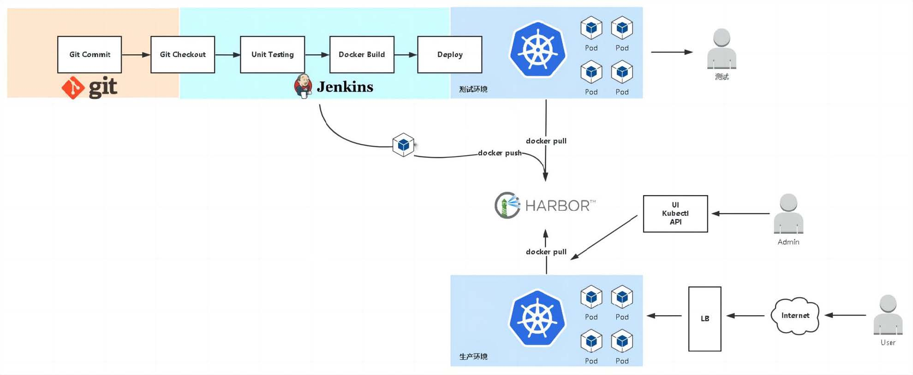
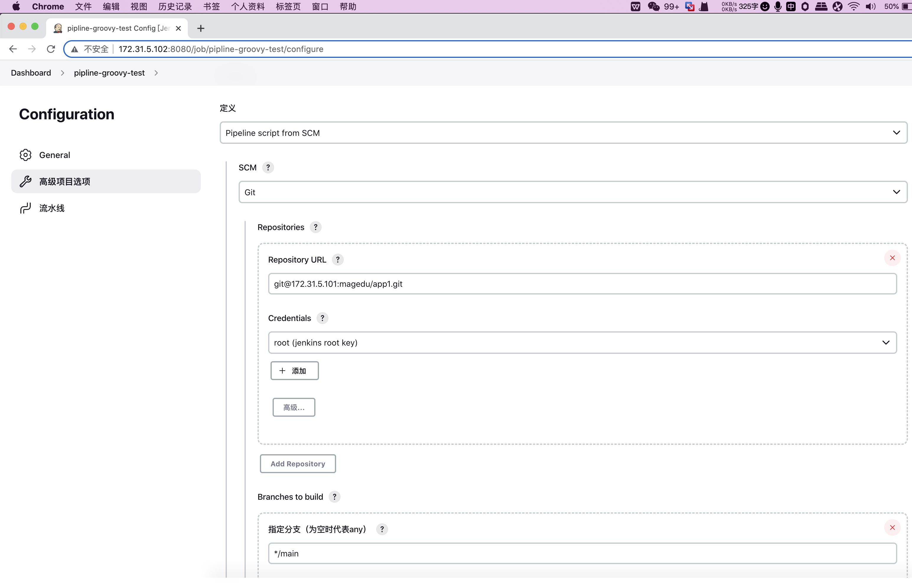
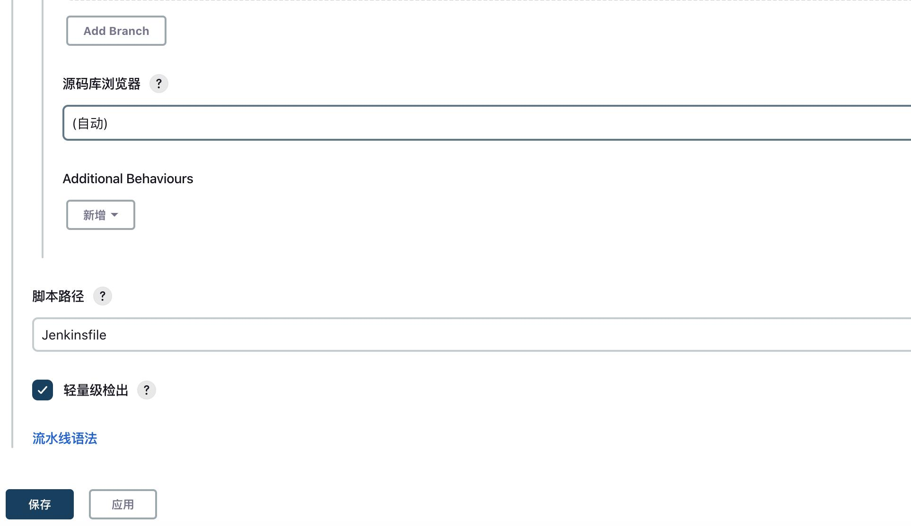
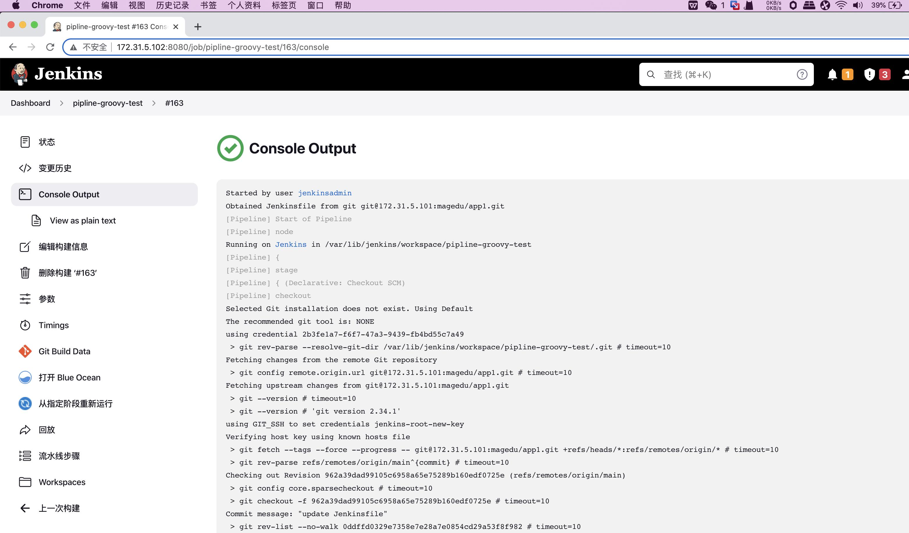
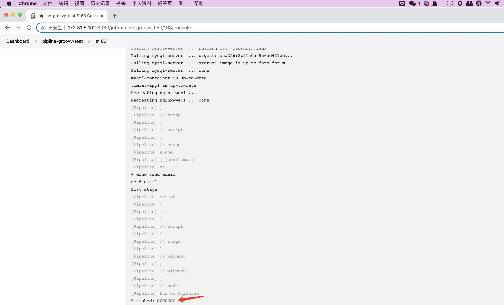

实战案例 基于Docker系统实现代码自动发布和回滚
实战案例:基于Docker系统实现代码自动发布和回滚
介绍



jenkins job-Jenkinsfile配置:
见--> Jenkinsfile 文件


jenkins 验证pipline部署结果:
![图片展示的是Jenkins Blue Ocean管理流水线界面，标题为“Pipeline pipeline - groovy - test”。左侧导航栏有“Pipeline”“Build with Parameters”“Pipeline”“Pipeline”“Pipeline”“Pipeline”“Pipeline”“Pipeline”“Pipeline”“Pipeline”“Pipeline”“Pipeline”“Pipeline”“Pipeline”“Pipeline”“Pipeline”“Pipeline”“Pipeline”“Pipeline”“Pipeline”“Pipeline”“Pipeline”“Pipeline”“Pipeline”“Pipeline”“Pipeline”“Pipeline”“Pipeline”“Pipeline”“Pipeline”“Pipeline”“Pipeline”“Pipeline”“Pipeline”“Pipeline”“Pipeline”“Pipeline”“Pipeline”“Pipeline”“Pipeline”“Pipeline”“Pipeline”“Pipeline”“Pipeline”“Pipeline”“Pipeline”“Pipeline”“Pipeline”“Pipeline”“Pipeline”“Pipeline”“Pipeline”“Pipeline”“Pipeline”“Pipeline”“Pipeline”“Pipeline”“Pipeline”“Pipeline”“Pipeline”“Pipeline”“Pipeline”“Pipeline”“Pipeline”“Pipeline”“Pipeline”“Pipeline”“Pipeline”“Pipeline”“Pipeline”“Pipeline”“Pipeline”“Pipeline”“Pipeline”“Pipeline”“Pipeline”“Pipeline”“Pipeline”“Pipeline”“Pipeline”“Pipeline”“Pipeline”“Pipeline”“Pipeline”“Pipeline”“Pipeline”“Pipeline”“Pipeline”“Pipeline”“Pipeline”“Pipeline”“Pipeline”“Pipeline”“Pipeline”“Pipeline”“Pipeline”“Pipeline”“Pipeline”“Pipeline”“Pipeline”“Pipeline”“Pipeline”“Pipeline”“Pipeline”“Pipeline”“Pipeline”“Pipeline”“Pipeline”“Pipeline”“Pipeline”“Pipeline”“Pipeline”“Pipeline”“Pipeline”“Pipeline”“Pipeline”“Pipeline”“Pipeline”“Pipeline”“Pipeline”“Pipeline”“Pipeline”“Pipeline”“Pipeline”“Pipeline”“Pipeline”“Pipeline”“Pipeline”“Pipeline”“Pipeline”“Pipeline”“Pipeline”“Pipeline”“Pipeline”“Pipeline”“Pipeline”“Pipeline”“Pipeline”“Pipeline”“Pipeline”“Pipeline”“Pipeline”“Pipeline”“Pipeline”“Pipeline”“Pipeline”“Pipeline”“Pipeline”“Pipeline”“Pipeline”“Pipeline”“Pipeline”“Pipeline”“Pipeline”“Pipeline”“Pipeline”“Pipeline”“Pipeline”“Pipeline”“Pipeline”“Pipeline”](../../../../assets/md-images/SzZFbeIxCom935xoyeKc6S4HnXd.jpg)




见--> Jenkinsfile 文件



